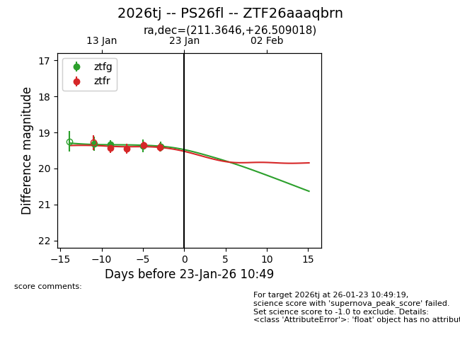
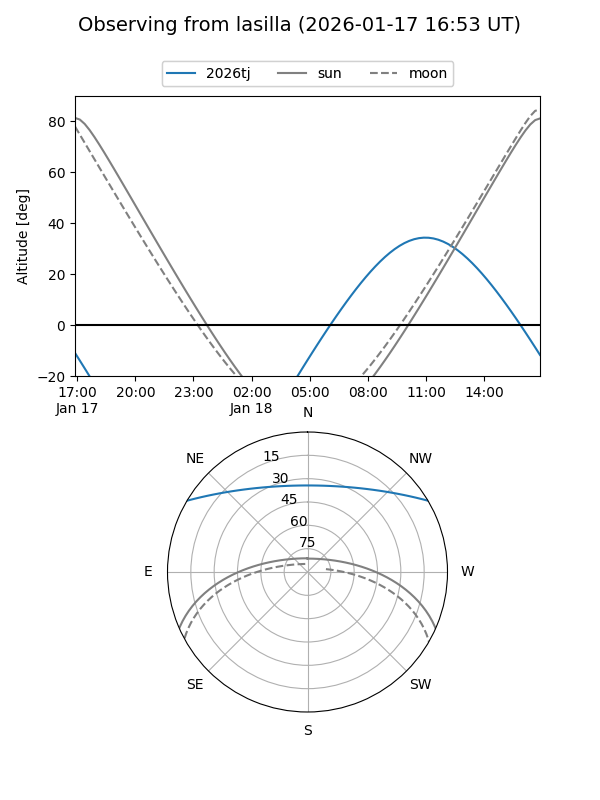
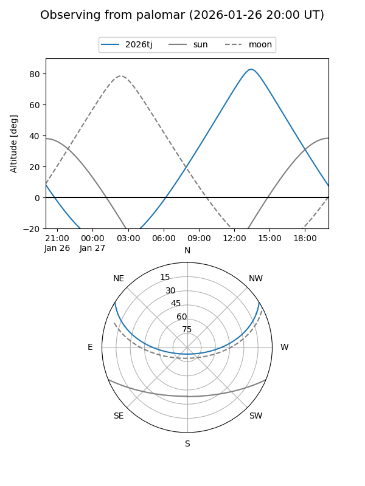
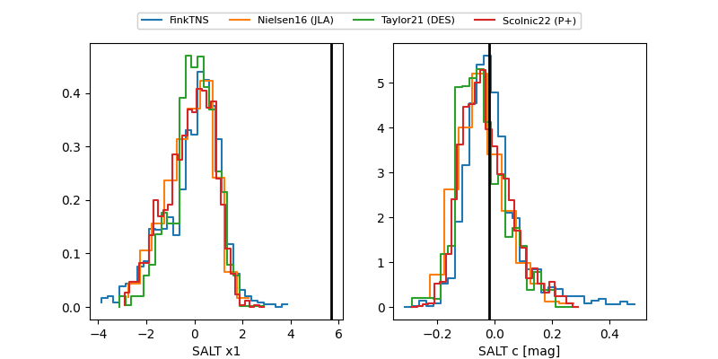

2026tj
Target 2026tj at 2026-01-26 11:12
Aliases and brokers:
FINK: link
Lasair: link
ALeRCE: link
TNS: link
YSE: link
alt names
ZTF26aaaqbrn (ztf,fink_ztf)
2026tj (tns,yse)
PS26fl (panstarrs)
Coordinates:
equatorial (ra, dec) = 211.3646,+26.50902
equatorial (HMS+DMS) = 14:05:27.49,+26:30:32.46
galactic (l, b) = (35.0069,+73.48860)
Flags:
Photometry:
last ztfg=19.56, ztfr=19.41
5 ztfg, 4 ztfr detections
Lightcurve

Visibility


Additional plots
